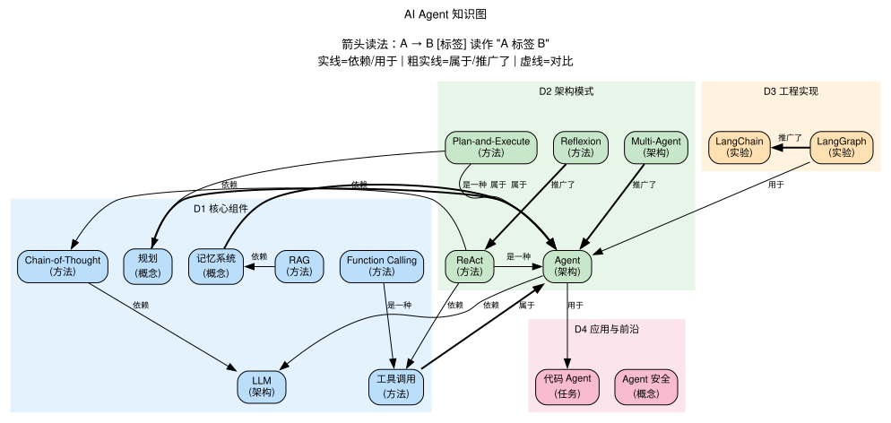

AI Agent¶
创建日期：2026-03-12
背景与起点¶
- 已有知识：LLM 全栈理论（Transformer、预训练、微调/对齐、RLHF/DPO），神经网络架构（MLP/CNN/RNN/GNN），用过 Agent 工具但不了解内部原理
- 从哪开始：Agent 的核心组件（规划、记忆、工具调用），然后到架构模式和工程实现
- 目的：理解 Agent 设计原理，具备自己搭建 Agent 的能力
- 可跳过：LLM 基础（已在
domains/LLM/覆盖）、神经网络基础（已在domains/neural-networks/覆盖）
领域概览¶
AI Agent 是以 LLM 为"大脑"的自主系统：它接收任务，自主规划步骤，调用外部工具执行操作，根据结果调整计划，最终完成任务。和纯 LLM 对话的区别在于：LLM 只生成文本，Agent 可以行动。
Agent 的核心等式：Agent = LLM + 规划 + 记忆 + 工具调用。LLM 提供推理能力，规划把复杂任务拆解成子步骤，记忆让 Agent 能从历史中学习，工具调用让 Agent 能和外部世界交互（搜索、执行代码、读写文件等）。
当前 Agent 的实践远超理论——很多设计是经验驱动的，理论理解还在追赶。
知识维度¶
| 维度 | 含义 | 核心问题 |
|---|---|---|
| D1 核心组件 | Agent 的 building blocks | 规划、记忆、工具调用各自怎么工作？ |
| D2 架构模式 | Agent 的整体设计范式 | ReAct、Plan-and-Execute、Multi-Agent 各适合什么场景？ |
| D3 工程实现 | 框架、API、调试、评估 | 怎么用代码把一个 Agent 搭出来？ |
| D4 应用与前沿 | 实际场景、局限性、未来方向 | Agent 能做什么？不能做什么？ |
为什么这样分？ - D1（组件）和 D2（架构）是不同抽象层级：工具调用是组件，ReAct 是把组件组装起来的模式 - D3（实现）关注怎么把设计落地为代码 - D4（应用）关注实际效果和局限，横跨 D1-D3
知识地图¶
概念之间的结构关系见下方关系图。这里只列学习顺序和简要说明。
前置：LLM 基础（参见 domains/LLM/，特别是 Transformer、预训练、对齐）
| 维度 | 学习顺序 | 一句话说明 |
|---|---|---|
| D1 核心组件 | 提示与推理 → 工具调用 → 记忆系统 → 规划 | 从最简单的 CoT 到完整的规划系统，逐步增加复杂度 |
| D2 架构模式 | ReAct → Plan-and-Execute → Multi-Agent → 人机协作 | 从单步推理-行动循环到多 Agent 协作 |
| D3 工程实现 | Function Calling API → LangChain/LangGraph → 评估与调试 | 从 API 调用到完整框架 |
| D4 应用与前沿 | 代码 Agent → 研究 Agent → 局限与安全 → 前沿方向 | 典型应用场景，当前瓶颈，未来展望 |
关系图¶

源文件：
knowledge-graph.dot，修改后运行./build-graphs.sh重新生成。
学习路径¶
| 序号 | 主题 | 维度 | 文件 |
|---|---|---|---|
| 1 | 全景概览 — Agent 是什么、核心组件、发展脉络 | 全部 | 01-overview.md |
| 2 | 提示与推理 — CoT、Few-shot、ReAct 提示模式 | D1+D2 | 02-prompting-reasoning.md |
| 3 | 工具调用 — Function Calling、API 设计、工具选择 | D1+D3 | 03-tool-use.md |
| 4 | 记忆系统 — 短期/长期记忆、RAG、向量数据库 | D1 | 04-memory.md |
| 5 | 规划 — 任务分解、Plan-and-Execute、自我反思 | D1+D2 | 05-planning.md |
| 6 | 架构模式 — ReAct、LATS、Multi-Agent、人机协作 | D2 | 06-architectures.md |
| 7 | 工程实现 — LangChain/LangGraph 实战、构建完整 Agent | D3 | 07-engineering.md |
| 8 | 评估与调试 — Agent 的测试、Benchmark、常见失败模式 | D3 | 08-evaluation.md |
| 9 | 应用与前沿 — 代码 Agent、研究 Agent、局限、安全、未来 | D4 | 09-applications-frontiers.md |
推荐资源¶
综述与教程¶
- Lilian Weng,"LLM Powered Autonomous Agents"（2023）— 最好的 Agent 概念综述
- Andrew Ng, AI Agentic Design Patterns（2024）— 设计模式总结
- LangChain 官方文档 — 最常用的 Agent 框架
论文¶
- Yao et al., "ReAct: Synergizing Reasoning and Acting"（2022）— Agent 的奠基论文之一
- Shinn et al., "Reflexion"（2023）— 自我反思改进
- Wang et al., "A Survey on Large Language Model based Autonomous Agents"（2023）— 全面综述
工具与框架¶
- LangChain / LangGraph — Python Agent 框架
- OpenAI Function Calling API — 工具调用的行业标准
- Anthropic Tool Use — Claude 的工具调用